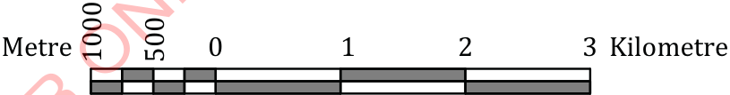

Map scale
A map scale is the ratio between the distance on the map and the real distance on the ground. The scale helps to present how the measurements on the map correspond to real-world measurements. The scale can be presented as a statement, representative fraction or ratio and linear scale.
As a statement
A statement scale describes the ratio of distance on the map to the real distance on the ground using words. For example, one centimetre on the map represents one kilometre on the ground.
As a Representative Fraction (R.F) or ratio
A representative fraction or ratio scale uses numbers to present the relationship between distance on a map and real distance on the ground, for example,
1:50000 or
As a linear
A linear scale is a graphical representation of ground distance using a line. Figure 3 presents the linear scale.

Map drawing tools
There are several tools used in drawing maps. These tools include a drawing table, paper, a pencil, a pair of dividers, a protractor, an eraser, a pen, a sharpener, colouring materials, and a ruler as presented in Figure 4.